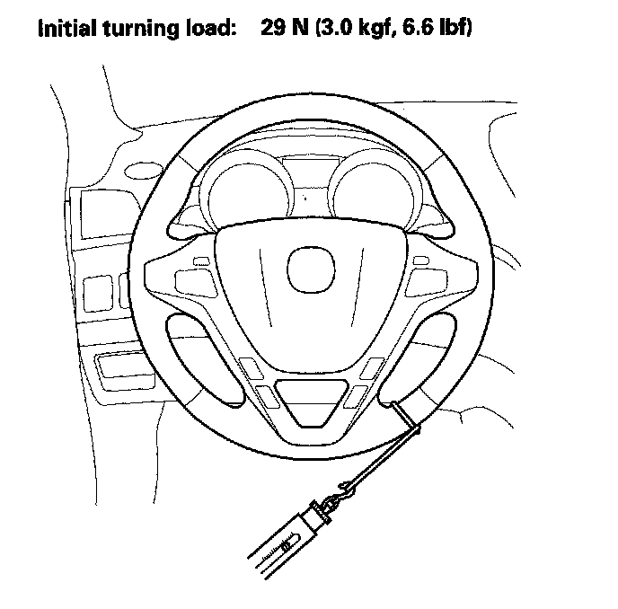

Power Assist Check
Power Assist CheckNOTE: This test should be done with original equipment tires and wheels at the correct tire pressure.
1. Check the power steering fluid level.
2. Start the engine, let it idle, and turn the steering wheel from lock-to-lock several times to warm up the fluid.
3. Attach a commercially available spring scale to the steering wheel. With the engine idling and the vehicle on a clean, dry floor, pull the scale as shown and read it as soon as the tires begin to turn.
^ If the scale reads no more than the specification, the steering gearbox and pump are OK.
^ If the scale reads more than the specification, troubleshoot the steering system.
